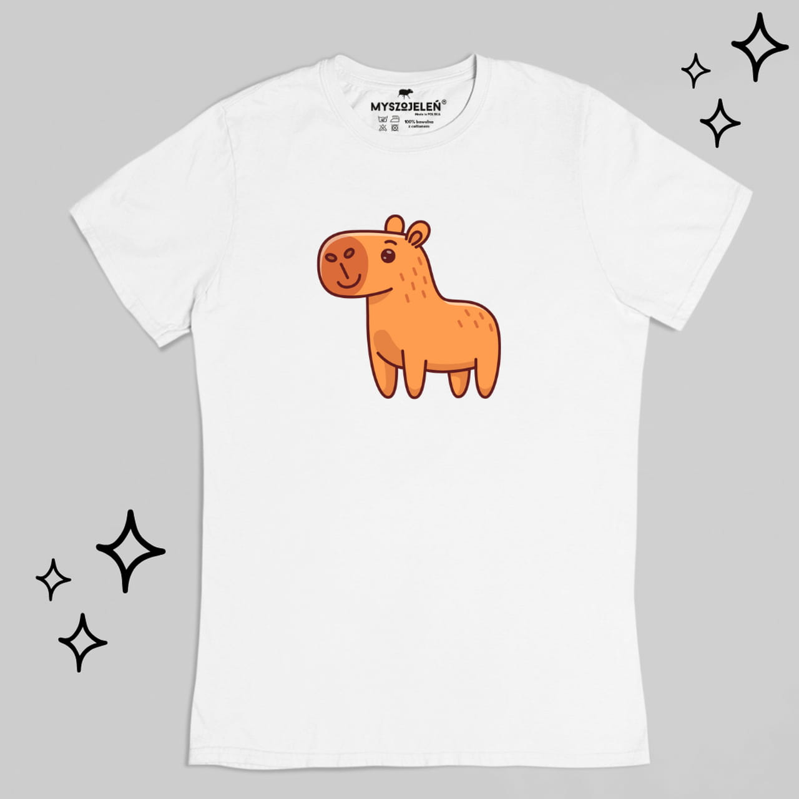

Koszulka Kapibary
Opisz produktu:
Koszulka z kapibarą nadrukowaną z przodu.
Doskonałej jakości bawełna uszyta z dbałością o najmniejszy szczegół i ten krój, w którym Twojemu dziecku będzie wygodnie niezależnie od okoliczności - takie są właśnie te koszulki.
Nadruk został wykonany za pomocą farb neutralnych dla środowiska. Jest miękki i wytrzymały. No i piękny, ale to wiadomo na pierwszy rzut oka.
Jeśli tak jak my ponad wszystko cenisz sobie wygodę i komfort, na pewno docenisz brak wszywanych metek, których jedyną funkcją jest gryzienie w kark. Instrukcję prania i informację o rozmiarze umieściliśmy wewnątrz koszulki w formie miękkiego nadruku.
Skład: 100% bawełna czesana ring-spun o gramaturze 180g, czyli idealnie mięsista dzianina. Ściągacz wokół szyi wykonany z bawełny/lycry, podwójne przeszycia. Bardzo miękka w dotyku. Taśma wzmacniająca na ramionach z takiego samego materiału.
WYMIARY KOSZULEK MIERZONYCH NA PŁASKO:
(cyfry oznaczają orientacyjny wiek dziecka, tzn. koszulka w rozmiarze 7-8 powinna pasować na siedmio- i ośmiolatka)
1-2 - szerokość 29, długość 34 cm
3-4 - szerokość 32, długość 39 cm
5-6 - szerokość 35, długość 45 cm
7-8 - szerokość 38, długość 49 cm
9-11 - szerokość 41, długość 56 cm
12-13 - szerokość 44, długość 63 cm
29.99 PLN